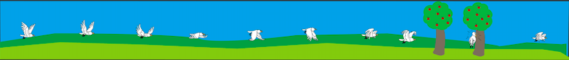

LAURA LORENTZEN
Portfolio
I denne video tester jeg en DJI Drone, dette var rigtig fedt at prøve.
Derefter fandt jeg musik til den på soundcloud, og klippede den sammen i Final Cut pro.
Vi skulle lave en dårlig hjemmeside om til en App eller hjemmeside på Adobe XD.
Jeg valgte at lave en app, som ser således ud på forsiden.
Vi fik til opgave at skulle lære programmet Abobe Illutrator at kende. Dette blev det første design jeg udarbejdede.
Vi fik til opgave at lave en animation.
Jeg startede med at brainstorme, og kom frem til min ide om en fugl der flyver ind i et træ.
Jeg begyndte at tegne baggrunden og fuglen på min iPad i Adobe Illutrator.
Derefter kodet jeg billedet i Atom, så det blev en lille animationsfilm.

Vi fik til opgave at lave en dating app. Vi blev sat sammen i grupper, men skulle finde på hver vores ide.
Jeg kom i tanke om en facebookgruppe der hedder ''date en indsat'', og tænkte det kunne være sjovt at lave en app ud fra den.
Vi fik fri leg i medielab, hvor vi havde mulighed for at tage billeder til vores portfolio.
Jeg brugte en tripod til at holde min telefon, som tog nogle forskellige billeder af mig.
Jeg brugte photoshop til at redigere det, og dette blev det endelige resultat.
Vi fik til opgave at vælge en hjemmeside som trængte til et redesign.Vores gruppe valgte Viborg Pizzaria.
Jeg lavede en målgruppeanalyse, og derfra udarbejdede jeg en persona.
Vi fik til opgave at lave en ny fortolket udstilling af ''Min Udstilling'' på Trapholt museet i Kolding.
Vores endelige ide var AR, som kunne give de besøgende en sjov oplevelse. Med tre store skærme skal man kunne lave sin egen udstilling.
Man skal kunne flytte møblerne og genstandende fra den ene skærm til den anden, ved hjælp af en controller.
Derfor har jeg udarbejdet en plakat, som skulle vække interesse for kommende gæster.
Mine Designs